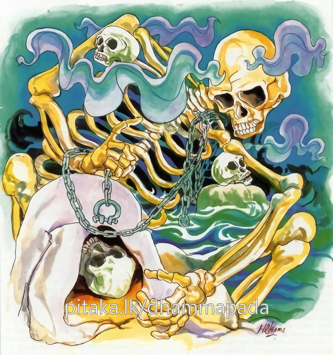

9-12 සුප්රබුද්ධශාක්යයා
මෙම කතාව ධම්මපද අටුවාවෙන් ද කියවන්න.
න අන්තලික්ඛෙ න සමුද්දමජ්ඣෙ
න පබ්බතානං විවරං පවිස්ස
න විජ්ජති සො ජගතිප්පදෙසො
යත්ථට්ඨිතං නප්පසහෙථ මච්චු.
යම් තැනෙක්හි සිටි සත්ත්වයා මරණ තෙම අභිභවනය නො කෙරේ ද, (හෙවත් මැඩැ නො පියා ද), (කෙසගක් පමණ වු ද) එසේ වූ භුමිප්රදෙෂයෙක් නැත. සමුද්රමධ්යයෙහි දු මරණින් මිදෙන්නට හැකි ප්රදේශයෙක් නැත. පර්වතයන්ගේ විවරයට වැද ද මරණින් මිදෙන්නට හැකි ප්රදේශයෙක් නැත.

සුප්රබුද්ධශාක්ය තෙමේ “මෙ තෙමේ මාගේ දුව හැරදමා ගියේ ය” යි ද, “මපුතු පැවිදි කොට සතුරුකම් කෙළේ ය” යි ද බුදුරජුන් කෙරෙහි වෛර බැඳ ගත්තේ ය. දිනෙක මොහු “ආරාධනා ලත් තැනින් බත් කන්නට නො දෙමි” යි බුදුරජුන් වඩින මග අවුරා ඇතුල් වීථියෙහි මත්පැන් බී සිට ගතු. ඒ වේලෙහි බුදුරජානන් වහන්සේ භික්ෂූන් විසින් පිරිවරන ලදු ව එතැනට වැඩි සේක. අවට සිටියෝ ඒ බව ඔහුට දැන්වූහ. සුප්රබුද්ධ තෙමේ “ඉවත යව, යි ඔහුට කියවු, ඔයා අප තරම් මහලු නො වේ, යන්නට මග ඉඩ නො දෙන්නෙමි” යි මග අවුරා සිටියේ ය. “එසේ නො කරව” යි මිනිසුන් කියනු ලැබූ ඔහු කිසිත් නො අදහා එසේ ම සිට ගත්තේ ය. බුදුරජානන් වහන්සේ වඩනට මග නො ලැබ එහි ම නැවැතුනු සේක. එ කල්හි ඔහු, “තෝ ගොස් ඔහු කියන්නක් දැන එව” යි චරපුරුෂයකු, බුදුරජුන් වෙත පිටත් කොට යැවී ය. බුදුරජානන් වහන්සේ එහි නතර වෙත් ම සිනා පහළ කළ සේක. ආනන්ද ස්ථවිරයන් වහන්සේ ඒ දැක සිනා පහළ කිරීමෙහි හේතු කිමැ'යි බුදුරජුන් විචාළාහු ය. “ආනන්ද! සුප්රබුද්ධයා දක්නහු ද? මා වැනි බුදු කෙනකුන්ට යෑමට මග ඉඩ නො දී ඔහු විසින් කළ කර්මය සුලු එකක් නො වේ, එය ඉතා මහත් ය, බැරෑරුම් ය, අදින් සත් වනදා ඔහුගේ ගෙයි පාතමාලයෙහි පඩිපෙළ මුල පැළී යන්නේ ය, ඒ පැළුනු තැනින් මොහු පොළොවේ ගිලී නිරයට වදින්නේ ය” යි උන්වහන්සේ වදාළ සේක.
තොරතුරු දැන ගැණීම පිණිස යොදවා සිටි චරපුරුෂයා, මේ කතාව අසා ඔහු වෙත ගොස් තම කණ වැටුනු එය ඔහුට කී ය. සුප්රබුද්ධ තෙමේ, “මාගේ බෑනනුවන්ගේ කතාවෙහි වරදෙක් නැත, ඔහු යමක් කියා නම්, එය ඒ සැටියෙන් ම වන්නේ ය, එසේ වුවත් කමක් නැත, වන්නෙක් වේවා, ඔහු බොරු කියන්නකු කොට නිග්රහ කරන්නෙමි, ඔහු, මා මෙයින් සත්වනදා පොළොව ගැලී යන්නේ ය, යි නියමයෙන් නො කියා, මාගේ ගෙයි යටිමාලයේ පඩිපෙළ මුල දී පොළොව වදින්නේ ය, යි බිම් නියමයක් කරයි, අද සිට මම එ තැනට නො යමි, එ තැනදී පොළොව නො වැද, ඔහුට බොරුවෙන් නිග්රහ කරන්නෙමි” යි තරයේ සිතට ගෙණ, තමන් ප්රයෝජන ගන්නා සියලු බඩුමූට්ටු, මුදුන් මාලයට ගෙන්වා ගෙණ, පඩිපෙළ අස් කරවා, දොර වසා එක් එක් දොරටුවෙහි මල්ලවපුරුෂයන් දෙදෙනා බැගින් සිටුවා “යම් ලෙසකින් මා යටිමාලට බසිනු පිණිස පැමිණිය හොත්, මා එයින් වළක්වාලනු” යි නියම කොට සත්වන දා උඩුමාලෙහි සිරියහන් ගබඩාවට වැදී හුන්නේ ය.
බුදුරජානන් වහන්සේ එය අසා, “සුප්රබුද්ධයා හුදෙක් මාලිගාවේ මතුමාලේ තබා අහසට නැග අහස සිටිය ද, නැවු නැගී මූදු ගිය ද කඳු විවරයකට වැදුන ද, බුදුවරුන්ගේ කතා දෙ පරිදි නො වේ. යමක් කීහු නම්, ඒ එසේ ම වන්නේ ය, මා කියූ තැනේ දී ම ඔහු පොළොව ගලන්නේ ය” යි වදාරා මේ ධර්ම දේශනාව කළ සේක:
න අන්තලික්ඛෙ න සමුද්දමජ්ඣෙ
න පබ්බතානං විවරං පවිස්ස,
න විජ්ජති සො ජගතිප්පදෙසො
යත්ථට්ඨිතං නප්පසහෙථ මච්චුති.
මාර තෙමේ, යම් තැනෙක සිටි සත්ත්වයා නො මැඩලන්නේ ද, එබඳු බිම්පෙදෙසෙක් නැත. අහසෙහි ද එබඳු තැනෙක් නැත. මුහුද මැදත් එබඳු තැනෙක් නැත. පර්වතවිවරයට වැද ද, එබඳු තැනෙක් නැත.
න අන්තලික්ඛෙ = අහසෙහි නැත.
න සමුද්දමජ්ඣෙ = මුහුද මැද ද නැත.
න පබ්බතානං විවරං පවිස්ස = කඳු විවරයට වැද ද නැත.
න විජ්ජති සො ජගතිපදෙසො = එබඳු වූ බිම් පෙදෙසෙක් නැත.
යත්ථට්ඨිතං නප්පසහෙථ මච්චු = මරු යම් තැනක සිටියහු නො මැඩලන්නේ ද.
සත්වනදා බුදුරජුන් පිඬු සිඟා වෙහෙරට වැඩිය කල්හි යට මාලෙහි සිටි මගුල් අසු, උදම්ව පහර දෙන්නට වන. සුප්රබුද්ධ, උඩුමාලෙහි හුන්න්ම මේ කිමැ? යි අසා “මගුල් අසු මත් ව ගියේ ය” යි කී කල්හි, තමන් දැක ම අසු සන්සිඳෙන බැවින් ඌ උඩුමාලෙට නගා ගන්නට නැගිට දොරකඩට පැමිණියේ ය. එකෙණෙහි ම සියලු දොර ඇරී ගියේ ය. එහි සිටි මල්ලවයෝ ඔහු බෙල්ලෙන් අල්වා පහතට ඇද දැමූහ. මෙලෙසින් සත් මාලෙහි ම දොර ඇරුනේ ය. හැම දොරකඩ සිටි මල්ලවයෝ ඔහු බෙල්ලෙන් අල්වා මහලින් මහලට ඇද දැමූහ. ඔහු යටිමාලෙහි පඩි පෙළ මුල වැටුනු සැටියේ ම මහපොළොව පැළී විවර වූවා ය. ඔහු එහි ගැලී ගොස් අවීචි මහා නරකයෙහි සිට ගත්තේ ය.
ධර්මදේශනාවගේ අවසානයෙහි බොහෝ දෙන සෝවන් ඵලාදියට පැමිණියෝ ය.
සුප්රබුද්ධශාක්ය වස්තුව නිමි.